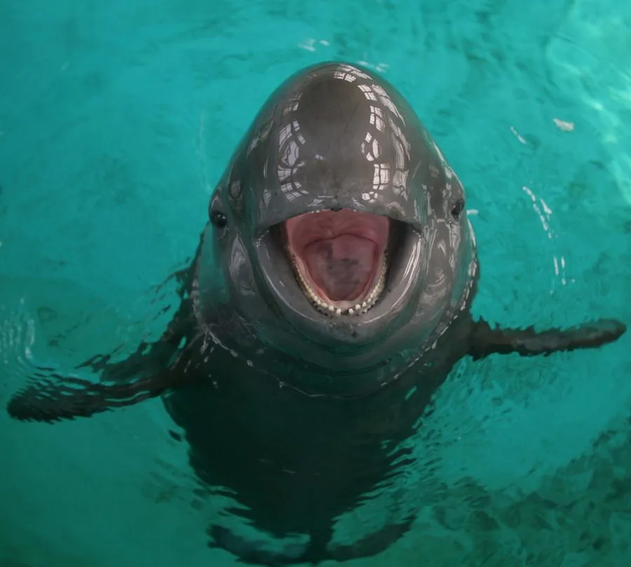

哺乳动物 · 动物界
长江江豚 Neophocaena asiaeorientalis

长江特有的淡水鲸类，没有背鳍、嘴角上翘如微笑，因种群数量稀少被列为极危，中国国家一级保护动物。
- 分类
- 门脊索动物门纲哺乳纲目偶蹄目科鼠海豚科属江豚属
- 栖息环境
- 长江中下游干流、大型通江湖泊及河口浅水区
- 地理分布
- 中国长江中下游及其支流、鄱阳湖和洞庭湖，偶入河口
- 保护级别
- IUCN 极危（CR）；中国国家一级保护动物
物种志
长江江豚体长 1.2–1.9 米，体重 40–70 kg，体形圆润流畅，全身灰黑色，腹部略浅。它与多数海豚不同，没有背鳍，背上只有一条窄窄的皮肤嵴；头部圆钝，嘴角自然上翘，看起来像在微笑。
长江江豚主要生活在长江中下游干流及与之相连的鄱阳湖、洞庭湖，也在河口咸淡水区域出现，主食小型鱼类和虾类，多在晨昏活动，靠高频声波回声定位在浑水中导航。它们通常以 2–5 头的母子群或繁殖群活动，有时聚成十几头的小群。雌豚妊娠期约 10–11 个月，每胎 1 仔。航运干扰、渔业误捕、饵料鱼减少和水污染曾使种群快速下降，2017 年科学考察估算约 1012 头，是长江目前唯一的淡水鲸类。
形态与习性
- 食性小型鱼类与虾类，靠回声定位捕食
- 体长1.2–1.9 m
- 体重40–70 kg
- 寿命约 20–25 年
- 繁殖妊娠期约 10–11 个月，每胎 1 仔
- 种群数量2017 年考察估算约 1012 头
- 外形特征没有背鳍，嘴角自然上翘
趣味知识
- 长江江豚没有背鳍，背上只有一条窄窄的皮肤嵴。
- 它的嘴角自然上翘，看起来总在微笑，因而被称为微笑天使。
- 2017 年科学考察估算长江江豚种群约 1012 头。
- 它是目前长江中唯一的淡水鲸类，靠回声定位在浑水中捕鱼。